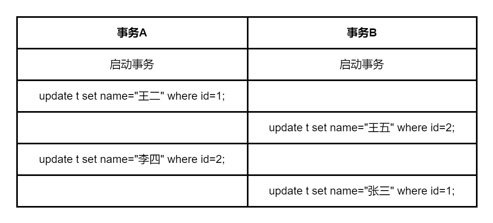

事务的实现离不开MySQL数据库的锁机制，设计锁的目的也是为了处理并发访问问题，本文简单介绍MySQL 里面的全局锁、表级锁和行锁三类锁。
按对数据操作的类型可分为读锁（read lock）和写锁（write lock）。
- 读锁也叫共享锁（S锁），加了读锁后，加锁的当前会话以及其它会话只能进行读操作，并且多个读操作可以同时进行。
- 写锁也称为排他锁，
X锁，exclusive的缩写，因为加了写锁之后其它会话不能进行读写操作。
从对数据操作的颗粒度来分，锁可以分为全局锁、表级锁和行锁，下面分别对他们进行介绍。
全局锁
全局锁是对整个数据库加锁，数据库被加上全局锁后所有数据表会处于只读状态，修改数据表的DDL语句，数据更新语句（增删改）等操作会被阻塞。
全局锁的命令是：FLUSH TABLES WITH READ LOCK; , 简称FTWRL，解锁命令：UNLOCK TABLES;
窗口A加全局锁：
1 | mysql> FLUSH TABLES WITH READ LOCK; |
窗口A插入数据会报错：
1 | mysql> insert into department (name) values ('测试'); |
窗口B查询：
1 | mysql> select * from department; |
窗口B插入数据会被阻塞：
1 | mysql> insert into department (name) values ('测试'); |
窗口A解锁：
1 | mysql> UNLOCK TABLES; |
窗口B插入语句执行成功：
1 | mysql> insert into department (name) values ('测试'); |
全局锁的一个使用场景是做全库逻辑备份（mysqldump），加了全局锁后，在备份过程中整个库处于只读状态。如果备份主库，备份期间更新相关业务都无法执行；如果是备份从库，备份期间从库就不能执行主库同步过来的 binlog，会导致主从延迟。
支持事务的引擎InnoDB可以不使用FTWRL，使用mysqldump命令备份时可以使用参数 --single-transaction 来获取一致性备份，它会在开始备份前启动一个事务（可重复读隔离级别），利用了MVCC技术（可参考文章MySQL事务：事务隔离），确保拿到一致性视图，备份过程可以正常更新数据。
而不支持事务的引擎MyISAM就无法使用 --single-transaction参数了，它不支持事务隔离，所以使用MyISAM引擎的数据库备份需要使用FTWRL命令。
表级锁
表级锁是对整张表加锁，MyISAM、InnoDB、BDB和MEMOR都支持表级锁。
MySQL 表级锁包括两种：表锁和元数据锁（meta data lock，MDL)。
表锁
表锁包括读锁（read lock）和写锁（write lock）。
1 | lock table 表名 read; -- 读锁 |
以MyISAM引擎为例演示一下表锁的作用效果：
创建一个以MyISAM为引擎的表，并插入一条记录：
1 | create table table_lock_test( |
1、读锁实例
窗口A给table_lock_test表加读锁：
1 | mysql> lock table table_lock_test read; |
查看被锁定的表：
1 | mysql> show open tables where In_use > 0; |
窗口A执行更新、插入操作：
1 | mysql> update table_lock_test set name='lishi' where id=1; |
窗口A读其它表：
1 | mysql> select * from department; |
未解锁前不能操作其它表。
窗口B查询：
1 | mysql> select * from table_lock_test; |
窗口B执行更新操作：
1 | mysql> update table_lock_test set name='lishi' where id=1; |
更新操作会被阻塞，因为读锁没有被释放，只能查询不能更新。到窗口A将锁释放：
1 | unlock tables; |
解锁后，窗口B更新操作成功：
1 | mysql> update table_lock_test set name='lishi' where id=1; |
2、写锁实例
窗口A给table_lock_test表加写锁：
1 | mysql> lock table table_lock_test write; |
窗口A执行更新、插入操作：
1 | mysql> update table_lock_test set name='zhangsan' where id=1; |
窗口A读其它表：
1 | mysql> select * from department; |
和读锁一样，未解锁前不能其它表进行CRUD操作。
窗口B查询：
1 | mysql> select * from table_lock_test; |
被阻塞了，因为写锁为排它锁，其它连接不能对table_lock_test表进行读写操作。
到窗口A将锁释放：
1 | unlock tables; |
解锁后，窗口B查询成功：
1 | mysql> select * from table_lock_test; |
元数据锁
在 MySQL 5.5 以后的版本中，访问一个表的时候会自动加上 MDL（metadata lock)，作用是保证读写的正确性。比如在RR隔离级别下，当前事务A在操作一个表的过程中，另外一个事务B对表执行DDL操作（表结构变更），如果没有MDL，会导致事务A 两次查询结果不一样。要实现可重复度，就需要使用到MDL。
当对一个表做DML操作（增删改查）时，加 MDL 读锁，当其它事务对表进行DDL操作时，需要先获得MDL 读锁才能对表结构进行修改；当要对表做DDL操作（表结构变更）时，会加 MDL 写锁。
- 读锁之间不互斥，多事务同时对一张表进行DML操作不会阻塞。 注意：实际进行增删改查时可能会看到锁等待，这是InnoDB的行锁导致的。
- 读写锁之间互斥，也就是对同一表进行的DML和DDL操作会相互阻塞。
- 写锁之间互斥，多事务同时对一张表进行DDL操作会阻塞，其中一个要等另一个执行完才能开始执行。
MDL锁在语句开始执行时申请，在事务提交后释放。如果事务A对表T加了一个MDL读锁，且未提交。事务B对数据表执行DDL操作，此时事务B会被锁住（Waiting for table metadata lock），因为事务A 的 MDL 读锁没有释放，而事务B需要 MDL 写锁，因此会被阻塞。而后续对表T的任何操作都会被阻塞，此时表T完全不可读写了。MDL 锁的这一机制需要特别注意。
在窗口A启动一个事务：
1 | mysql> select * from performance_schema.metadata_locks; |
事务A启动后，metadata_locks表新增了一条table_lock_test表的加锁记录。
窗口B执行一个修改表结构的DDL操作：
1 | mysql> ALTER TABLE table_lock_test ADD age TINYINT; |
会被阻塞。
窗口A查询数据库线程：
1 | mysql> show processlist; |
可以发现线程37在等待MDL锁。
接着窗口C执行查询操作：
1 | mysql> select * from table_lock_test; |
也被阻塞了，后续对表table_lock_test的任何操作都会被阻塞掉。
到窗口A提交事务
1 | mysql> commit; |
B和C执行成功。查询表，字段添加成功：
1 | mysql> select * from table_lock_test; |
查询table_lock_test表的加锁记录，表table_lock_test消失：
1 | mysql> select * from performance_schema.metadata_locks; |
行锁
行锁简介
行锁是对数据行加锁，是在引擎层实现的，MyISAM 引擎不支持行锁，而 InnoDB 引擎是支持行锁的，因此相比MyISAM 引擎，InnoDB可以提供良好的并发控制。
当然行锁也包括读锁（read lock）和写锁（write lock）。
- 读锁也叫共享锁，
S锁，加了读锁后，加锁的当前会话以及其它会话只能进行读操作，并且多个读操作可以同时进行。 - 写锁也称为排他锁，
X锁，exclusive的缩写，因为加了写锁之后其它会话不能进行读写操作。
当前读都会加行锁：
1 | select * from account lock in share mode; # 添加读锁（S 锁，共享锁） |
InnoDB 引擎的行锁会自动加上，比如在更新数据时会自动加上行锁，其它事务对相同行数据进行更新时就会被阻塞，直到锁被释放才能更新。
行锁不是在数据更新完行之后就立马解锁，而是在事务提交(commit)或者回滚(rollback)之后才会解锁。这称为两阶段锁协议，包括加锁和解锁两个阶段。
行锁实例
下面看一个例子：
先创建一个表，使用InnoDB引擎：
1 | create table table_row_lock( |
事务隔离级别为可重复读（RR）。
插入数据：
1 | mysql> insert into table_row_lock (name) values ('张三'); |
窗口A启动一个事务，并更新数据：
1 | mysql> begin; |
窗口B更新相同行的记录，会被阻塞：
1 | mysql> update table_row_lock set name="张三" where id=1; |
行锁等待时间可以执行 SHOW VARIABLES LIKE 'innodb_lock_wait_timeout'; 命令查看：
1 | mysql> SHOW VARIABLES LIKE 'innodb_lock_wait_timeout'; |
窗口B更新其它行记录：
1 | mysql> update table_row_lock set name="王五" where id=2; |
id=2行数据没有被加写锁，所以可以对它进行更新操作。
窗口A提交事务：
1 | mysql> commit; |
此时窗口B就可以更新id=1那行数据了。
1 | mysql> update table_row_lock set name="张三" where id=1; |
死锁
真实业务中通常对数据库进行并发控制，多个事务可能会依赖相同的资源，如果都在等待其它事务释放锁时，这会导致这几个事务进入无限等待的状态，也就是出现死锁。
比如下图就会出现死锁，事务 A 在等待事务 B 释放 id=2 的行锁，而事务 B 在等待事务 A 释放 id=1 的行锁。

出现死锁后，有两种策略来解决：
- 等待锁超时。默认超时等待时间为50s，可通过
innodb_lock_wait_timeout参数来设置，具体等待时间需要根据自己的实际业务来设置。 - 死锁检测。设置参数
innodb_deadlock_detect = on，开启后，系统会自动检测死锁的事务并回滚某一个事务，让其他可以事务继续执行。
总结
本文简单介绍了全局锁、表级锁和行锁，全局锁主要用于全库逻辑备份。如果数据库引擎使用的是 InnoDB，可以使用 -–single-transaction 参数。
表锁是对整张表加锁，访问一个表的时候会自动加上元数据锁(MDL)，MDL锁在语句开始执行时申请，在事务提交后释放。如果表T的MDL锁没有释放，后续对表T的任何操作都会被阻塞。
行锁是对数据行加锁，MyISAM引擎不支持行锁，它一般使用的是表级锁。InnoDB 引擎支持行锁，因此它可以实现更好的并发控制。另外使用行锁要注意尽量减少死锁对数据库的影响。
另外要注意的是，加锁是要消耗资源的，对锁的各种操作会增加系统的开销，相比MyISAM引擎，InnoDB 引擎的行锁会导致占用更大的数据空间。
本文标题:MySQL锁：全局锁、表级锁和行锁
文章作者:hiyo
文章链接:https://hiyongz.github.io/posts/database-for-mysql-lock/
许可协议:本博客文章除特别声明外，均采用CC BY-NC-ND 4.0 许可协议。转载请保留原文链接及作者。